Номер задания
Вопрос
Ответ
1
Установите соответствия:
|
1 |
Обучение с учителем |
А |
Кластеризация |
|
2 |
Обучение без учителя |
Б |
Регрессия |
|
3 |
Подготовка данных |
В |
Заполнение пропусков |
1Б 2А 3В
2
Установите последовательность этапов решения задачи машинного обучения:
1. Построение (выбор) модели.
2. Обучение модели и оценка качества.
3. Эксплуатация модели.
4. Понимание задачи и предобработка данных.
4 1 2 3
3
Установите соответствия:
|
1 |
MSE |
А |
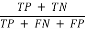 |
|
2 |
MAE |
Б |
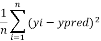
|
|
3 |
Accuracy |
В |
|
1Б 2В 3А
4
Установите соответствия:
|
1 |
Расстояние Чебышева |
А |
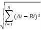 |
|
2 |
Евклидово расстояние |
Б |
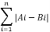 |
|
3 |
Расстояние Хэмминга |
В |
|
1В 2А 3Б
5
Установите соответствия:
|
1 |
Разделение множества объектов на два класса |
А |
однофакторная регрессия |
|
2 |
Исследование влияния одного признака на целевую переменную |
Б |
бинарная классификация |
|
3 |
Исследование влияния нескольких признаков на целевую переменную |
В |
множественная регрессия |
|
4 |
Разделение множества объектов на три и более класса |
Г |
мультиклассовая классификация |
1Б 2А 3В 4Г
6
Установите соответствия:
|
1 |
Модель, которая заменяет объект-оригинал, обладая его существенными инф. свойствами |
А |
Имитационное моделирование |
|
2 |
Метод, основанный на моделировании случайных величин для вычисления характеристик их распределений |
Б |
Фрактал |
|
3 |
Дискретная динамическая система, поведение которой определяется локальными правилами |
В |
Информационная модель |
|
4 |
Структура, состоящая из частей, подобных целом |
Г |
Метод Монте-Карло |
|
5
|
Моделирование, использующее взаимодействующие параллельные процессы-аналоги |
Д |
Клеточный автомат |
1В 2Г 3Д 4Б 5А
7
Установите соответствия:
|
1 |
Тип связи между объектами, при котором один экземпляр одного объекта связан с одним экземпляром другого |
А |
Самоподобие |
|
2 |
Вид модели, которая описывает поведение системы, на которую нельзя повлиять |
Б |
Структурный анализ |
|
3 |
Свойство фрактала, означающее, что часть структуры подобна целому |
В |
Вспомогательный атрибут |
|
4 |
Этап имитационного моделирования, на котором проводится формализация структуры сложного процесса |
Г |
Дескриптивная модель |
|
5
|
Тип атрибута, который используется для связи экземпляра одного объекта с экземпляром другого |
Д |
Связь “один-к-одному” |
1Д 2Г 3А 4Б 5В
8
Установите соответствия:
|
1 |
Модель, в которую входят параметры, доступные к изменению для достижения заданной цели |
А |
Формализация |
|
2 |
Процесс замены реального объекта его формальным описанием |
Б |
Выживание |
|
3 |
Вид фрактала, получаемый с помощью нелинейных процессов в n-мерных пространствах |
В |
Оптимальная модель |
|
4 |
Правило игры “Жизнь”, по которому клетка с тремя соседями остаётся жить |
Г |
Алгебраический фрактал |
|
5
|
Свойство последователньости псевлослучайных чисел, позволяющее точно воспроизвести поток чисел. |
Д |
Воспроизводимость |
1В 2А 3Г 4Б 5Д
9
Установите соответствия:
|
1 |
Процесс, при котором модель проверяется на тестовой задаче с известным ответом |
А |
Указательный атрибут |
|
2 |
Атрибут, значения которого могут служить идентификатором экземпляра объекта |
Б |
Отладка |
|
3 |
Вид имитационного моделирования, рассматривающий только основные события системы |
В |
Принцип простоты |
|
4 |
Принцип, согласно которому из двух моделей выбирается более простая |
Г |
Дискретно-событийное моделирование |
1Б 2А 3Г 4В
10
Установите соответствия:
|
1 |
Модель, предназначенная для решений в условиях неполной информации |
А |
Аффинное преобразование |
|
2 |
Преобразование, используемое в системах итерируемых функций (IFS) |
Б |
Условная адекватность |
|
3 |
Свойство модели, при котором она соответствует объекту только при определённых условиях |
В |
Игровая модель |
|
4 |
Этап мат моделирования, на котором производится разделение входных параметров важности |
Г |
Ранжирование |
|
5
|
Тип генератора случайных чисел, в котором используется параметр с=0 |
Д |
Мультипликативный генератор |
1В 2А 3Б 4Г 5Д
11
Установите соответствия:
|
1 |
CNN |
А |
Обработка последовательностей (тексты, речь) |
|
2 |
RNN |
Б |
Сжатие и восстановление данных |
|
3 |
Transformer |
В |
Извлечение признаков из изображений |
|
4 |
Autoencoder |
Г |
Работа с вниманием и параллельными вычислениями |
1В 2А 3Г 4Б
12
Установите соответствия:
|
1 |
Sigmoid |
А |
Ограничивает значения от 0 до 1 |
|
2 |
ReLU |
Б |
Используется для многоклассовой классификации |
|
3 |
Tanh |
В |
Диапазон от -1 до 1, сглаженная функция |
|
4 |
Softmax |
Г |
Простая, обрезает отрицательные значения |
1А 2Г 3В 4Б
13
Установите соответствия:
|
1 |
SGD |
А |
Сохраняет скользящее среднее градиентов |
|
2 |
Adam |
Б |
Использует моментум и адаптивный шаг |
|
3 |
PMSProp |
В |
Классический стохастический градиентный спуск |
|
4 |
Adagrad |
Г |
Уменьшает шаг для часто обновляемых параметров |
1В 2Б 3А 4Г
14
Установите соответствия:
|
1 |
Классификация |
А |
Разметка каждого пикселя |
|
2 |
Регрессия |
Б |
Предсказание непрерывного значения |
|
3 |
Сегментация |
В |
Создание новых данных |
|
4 |
Генерация |
Г |
Отнесение объекта к классу |
1Г 2Б 3А 4В
15
Установите соответствия:
|
1 |
Dropout |
А |
Уменьшает переобучение за счёт шума в данных |
|
2 |
L1-регуляризация |
Б |
Зануляет случайные нейроны во время обучения |
|
3 |
L2-регуляризация |
В |
Штраф за сумму модулей весов |
|
4 |
Data Augmentation |
Г |
Штраф за квадраты весов |
1Б 2В 3Г 4А
16
Расположите в верном порядке этапы обучения нейронной сети, где этап “А” следует считать начальным:
А) Обновление весов по правилу оптимизатора
Б) Расчёт функции потерь
В) Прямое распространение
Г) Обратное распространение ошибки
1В 2Б 3Г 4А
17
Установите соответствие:
|
1 |
Self-Attention |
А |
Добавляет информацию о порядке слов |
|
2 |
Positional Encoding |
Б |
Позволяет учитывать разные аспекты внимания |
|
3 |
Multi-Head Attention |
В |
Сравнивает элементы последовательности |
|
4 |
Feed-Forward Layer |
Г |
Применяет нелинейное преобразование |
1В 2А 3Б 4Г
18
Установите соответствие:
|
1 |
Convolutional Layer |
А |
Нормализует входы для ускорения обучения |
|
2 |
Pooling Layer |
Б |
Сжимает размерность (max pooling) |
|
3 |
Fully Connected Layer |
В |
Объединяет признаки для классификации |
|
4 |
Batch Normalization |
Г |
Извлекает локальные признаки |
1Г 2Б 3В 4А
19
Расположите в верном порядке этапы обучения нейронной сети, где этап “А” следует считать начальным:
А) Разделение на обучающую/тестовую выборку
Б) Нормализация/стандартизация данных
В) Сбор данных
Г) Аугментация (расширение файлов)
1В 2А 3Б 4Г
20
Установите соответствия:
|
1 |
Accuracy |
А |
Баланс между precision и recall |
|
2 |
Precision |
Б |
Доля правильно классифицированных |
|
3 |
Recall |
В |
Доля истинных положительных среди найденных |
|
4 |
F1-score |
Г |
Доля найденных объектов среди всех истинных |
1Б 2В 3Г 4А
21
Среди представленных ниже понятий выберите свойства информации:
А) Вероятность
Б) Понятность
В) Решаемость
Г) Достоверность
Д) Актуальность
1Б 2Г 3Д
22
Установите соответствие:
|
А |
Звуковой файл, записанный на флэш-накопитель |
|
Б |
Человеческая речь |
|
|
В |
Напряжение на выходе микрофона |
|
Г
|
Электронная таблица |
1Б, В 2А, Г
23
Установите соответствия:
|
1 |
Линейный |
А |
Вычисление факториала через вызов самого себя |
|
2 |
Разветвляющийся |
Б |
Проверка числа на чётность с условием |
|
3 |
Циклический |
В |
Последовательное вычисление суммы |
|
4 |
Рекурсивный |
Г |
Повторение команды до вычисления условия |
1В 2Б 3Г 4А
24
Установите соответствия:
|
1 |
Лента |
А |
Символы с которыми работает модель |
|
2 |
Головка |
Б |
Хранение информации |
|
3 |
Алфавит |
В |
Определяет правила работы |
|
4 |
Таблица переходов |
Г |
Считывание и запись символов |
1Б 2Г 3А 4В
25
Установите соответствия:
|
1 |
И |
А |
Инвертирует значение |
|
2 |
ИЛИ |
Б |
Истинно, если истинно только одно из значений |
|
3 |
НЕ |
В |
Истинно, если оба значения истинны |
|
4 |
Исключающее ИЛИ |
Г |
Истинно, если хотя бы одно из значений истинно |
1В 2Г 3А 4Б
26
Дана обучающая выборка из 100 объектов, описывающая спрос респондентов по их намерению купить новый товар. В результате опроса - 60 клиентов ответили, что купят товар, 40 ответили, что не купят товар. На данной выборке построена и обучена модель классификации, получен результат: из 60 клиентов, которые купят товар, модель верно классифицировала 50 (True Positive, TP), а 10 ошибочно отнесла к классу, кто не купит (False Negative, FN); из 40 клиентов, кто ответил, что не купит товар модель верно классифицировала 30 (True Negative, TN), а 10 ошибочно отнесла к классу купит (False Positive, FP). Составьте матрицу ошибок алгоритма. Вычислите точность (accuracy) обученного алгоритма. В ответе укажите точность Разделитель разрядов запятая. Запишите матрицу ошибок в одну строку значения через пробел. Приведите ход решения.
0.8
50 10 10 30
(50 + 30) / (50 + 10 + 10 + 30) = 0.8
27
В результате эксперимента была получена таблица с данными, как представлено ниже.
|
х |
-2 |
1 |
4 |
7 |
10 |
|
у |
-5 |
-1 |
10 |
-2 |
21 |
Предполагается, что у - это зависимая характеристика объекта, а х - независимая характеристика объекта. По этим данным, используя библиотеку scikit-learn было построенно регрессионное решающее дерево
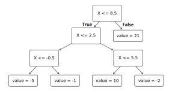
Предскажите по нему, какое предположительно значение примет зависимая характеристика при значении независимой характеристики 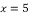. В ответ запишите получившееся число. Приведите краткое обоснование
10
Начиная с корня,
сравниваем значения и
условие, попадаем в лист со значением 10
28
Разработана модель машинного обучения для определения вероятности того, совершит ли покупку посетитель интернет-магазина. Внутри модели используется сигмоидная функция активации:
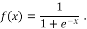
Здесь x – входные данные. При работе модели на выходе этой функции активации получилось значение 0,5. Найдите значение, которое было подано на вход сигмоидной функции. Приведите ход решения.
0
f(x) = 1/(1 + e ** (-x)) =0.5
e**(-x)= 1
x = 0
29
Дан центроид кластера с координатами X = (1, 3). Найти евклидово расстояние от центроида до точки Y = (1, 4). В ответе укажите значение. Приведите ход решения
1
Корень из ((1 - 1)**2 + (3 - 4)**2) = корень из 1 = 1
30
Для решения задачи бинарной классификации была построена нейронная сеть. В качестве функции активации была использована пороговая функция активации. В качества порога срабатывания взято значение 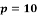. Нейронная сеть и её функция активации представлены ниже.

На вход этой нейронной сети поступил объект (2, 3, 3). Найдите выход . В ответе запишите значение. Приведите ход решения.
1
(2*3 + 3*2 + 1*3) = 15 > 10
31
При построении решающих деревьев важным является оценка критерия ветвления. Пусть имеется два класса. Для решения задачи классификации строят дерево принятия решений. В результате разделения данных в узел попало 5 объектов первого класса и 5 объектов второго класса.
Рассчитайте коэффициент Джини для данного узла:
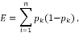

где 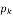 – доля объектов -го класса в узле,
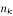 – количество объектов -го класса,
– всего объектов в узле.
В ответ запишите получившееся число. Приведите ход решения
0,42
Найдём доли объектов каждого класса в узле
n=7+3=10; p1=7/10=0.7; p2=3/10=0.3
Далее рассчитаем кэф Джини: 0.7*(1-0.7) + 0.3*(1-0.3) = 0.21 + 0.21 = 0.42
32
Одним из важных аспектов машинного обучения является подготовка экспериментальных данных для последующего применения алгоритмов. Проводится эксперимент по оценке температуры технического устройства. По результатам замера данных в течении 8 часов получена следующая таблица, в которой присутствует ошибка.
|
9.00 |
10.00 |
11.00 |
12.00 |
13.00 |
14.00 |
15.00 |
16.00 |
17.00 |
11.00 |
|
20 |
22 |
22 |
25 |
23 |
323 |
24 |
25 |
24 |
24 |
Исправьте ошибку медианным значением. В ответе укажите значение, которое должно быть внесено вместо ошибки и как оно было найдено
24
Сортируем по возрастанию 20, 22, 22, 23, 24, 24, 24, 25, 25.
В середине у нас медиана - 24
33
В таблице представлены данные о сотрудниках
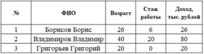
Определите наименьшее расстояние между объектами в таблице используя формулу Хэмминга и запишите его в ответ. Приведите краткое обоснование
18
Расстояние между первым и третьим наименьшее
(26-20) + (6-0) + (26-20) = 18
34
Даны два объекта из датасета со следующим числовыми значениями признаков: A(1, 1) и B(4, 5). Определите евклидово расстояние между ними.
5
(1-4)**2 + (1-5)**2= 9+16 = 25
корень из 25 = 5
35
Даны векторы признаков для двух объектов
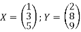
Найдите расстояние Чебышева.
5
Расстояние Чебышева max(Ai - Bi) -> получается 8 - 3 = 5 максимальное
36
Для анализа покупательной способности клиентов была построена следующая модель множественной регрессии:
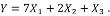
Здесь 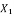 – доход клиента, 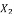 – стаж работы, 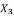 – возраст клиента. При 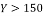 клиент купит предлагаемый товар.
По следующим признакам клиента: 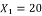 , 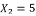 , 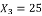, определите, купит ли он товар. В ответе запишите да или нет.
Да
140+10+25 = 175 > 150
Следовательно купит
37
В результате применения регрессионной модели к исходным данным 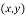 были получены следующие предсказанные значения 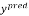 на тех же данных:
|
|
|
|
|
1 |
9 |
3 |
|
4 |
3 |
2 |
|
6 |
6 |
8 |
|
8 |
9 |
6 |
Оцените качество модели, используя для этого метрику MAE (MeanAbsoluteError).
3
(|9-3| + |3-2| + |6-8| + |9-6|) /4 = 12/4=3
38
В результате применения регрессионной модели к исходным данным были получены следующие предсказанные значения на тех же данных:
|
|
|
|
|
1 |
2 |
3 |
|
3 |
3 |
4 |
|
5 |
6 |
5 |
|
7 |
6 |
3 |
Оцените качество модели, используя для этого метрику MSE (MeanSquaredError).
3
((2-3)**2 + (3-4)**2 +
(6-5)**2 + (6-3)**2) \4 =
=12\4=3
39
Дана таблица с данными по клиентам кредитной организации:
|
№ |
Возраст, |
Подтверждённый |
Величина взятого |
Кредит возвращён, |
|
1 |
40 |
200 |
175 |
да |
|
2 |
30 |
150 |
250 |
да |
|
3 |
30 |
150 |
400 |
нет |
|
4 |
50 |
100 |
100 |
нет |
|
5 |
40 |
150 |
175 |
??? |
Для человека из таблицы выше, у которого неизвестна кредитная история, необходимо определить, вернёт ли он кредит. Для решения задачи используйте метод K-ближайших соседей, где K=1. Для нахождения расстояния между объектами. В ответе запишите либо да, либо нет.
Да
Ближайший соседом является клиент под номер один, следовательно ответ - да
40
Для кластеризации данных применялся метод K-средних. Причём для нахождения расстояния между объектами использовалась следующая метрика: 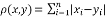. В результате были получены следующие центры кластеров:
(1, 2, 7) – 1 кластер,
(3, 5, 9) – 2 кластер,
(4, 0, 1) – 3 кластер.
Найти к какому кластеру относится объект со следующими характеристиками (3, 2, 7).
В ответе запишите число – номер кластера
1
Найдём расстояния по формуле Хэмминга. Расстояние объекта к первому кластеру наименьшее.
41
Какими характеристиками обладает модель, построенная на строгих формулах и уравнениях?
Модель, основанная на формальных математических законах.
42
Укажите верную последовательность для операторов SELECT, FROM, WHERE в SQL-запросе. В ответ запишите операторы в правильной последовательности.
SELECT, FROM, WHERE
43
Какой подход используется для систем с независимыми взаимодействующими объектами?
Моделирование децентрализованных систем с активными агентами
44
Какой генератор случайных чисел создаёт псевдослучайные последовательности, похожие на случайные?
Генератор, основанный на детерминированном алгоритме
45
Приведите пример класса функций, что описывают повторяющиеся процессы.
Класс функций колебательных процессов.
46
Даны значения [2, 4, 6, 8]. Вычислите стандартное отклонение. Приведите решение.
Среднее = (2+4+6+8)/4=5
Дисперсия = [(2-5)**2 + (4-5)**2 + (6-5)**2 + (8-5)**2]/4 = (9+1+1+9)/4=5
Стандартное отклонение корень из 5 ~ 2.236
47
Вычислите: NOT(TRUE AND FALSE) OR TRUE
Приведите решение
TRUE
NOT(FALSE) OR TRUE = TRUE OR TRUE = TRUE
48
Брошены 2 игральные кости. Найдите вероятность суммы 7. Ответ обоснуйте решением
1/6
Решение:
Благоприятные исходы: (1,6), (2,5), (3,4), (4,3), (5,2), (6,1) - 6 исходов
49
В лотерее можно выиграть 100 рублей с вероятностью 0.1 или проиграть 10 рублей с вероятностью 0.9. Найдите средний выигрыш.
1
M(x) = 100 * 0.1 + (-10) * 0.9 = 10 - 9 = 1
50
Какой метод используется для вычисления интегралов с помощью случайных чисел?
Метод Монте-Карло
51
Даны два ЛКГ:
Генератор А: а=3, с=1, m=8, X0=1
Генератор B: а=3, с=0, m=8, X0=1
Какой из генераторов имеет максимальный период и почему?
А
Генератор А:
- >4->5->0->1 (период = 4)
Генератор B:
- >3->1->3->1 (период = 2)
Генератор А имеет период 4, так как c не равное 0 обеспечивает лучшие статистические свойства
52
ЛКГ имеет параметры: а=6, с=3, m=11. Будет ли достигнут максимальный период (m) при любом начальном значении X0? Обоснуйте
Нет
Проверяем условия максимального периода:
с и m взаимно просты: НОД(3,11) = 1
a-1 кратно всем простым делителям m:
a-1=5, m=11 (простое), 5 не кратно 11
Если m кратно 4, то а-1 тоже должно быть кратно 4: m=11 не кратно 4
Ответ: Нет, так как не выполняется условие а-1 р для всех простых делителей p числа m
53
ЛКГ: a=3, c=1, m=8, X0=1. Вопрос: Найти длину периода. Ответ обоснуйте
4
- >4->5->0->1->..
Ответ: период = 4
54
Нужно сгенерировать 100 случайных чисел. Вопрос: какие параметры ЛКГ смогут обеспечить период >= 100?
m=128( > 100)
c=1 (нечётное)
a=5 (простое число)
Ответ: m=128, a=5, c=1
55
Случайная величина X принимает значения: 1 с вероятностью 0.5 и 3 с вероятность 0.5. Найдите дисперсию X. Обоснуйте
1
M(x) = 1*0.5 + 3*0.5 = 2
D(x) = (1-2)**2*0.5 + (3-2)**2*0.5 = 0.5+0.5 = 1
56
Даны три правила:
- ЕСЛИ х - Малый, ТО у - Низкий
- ЕСЛИ х - Средний, ТО у - Средний
- ЕСЛИ х - Большой, ТО у - Высокий
Степени принадлежности для х: Малый = 0.3, Средний = 0.6, Большой = 0.2. Вычислите агрегированное выходное значение методом усреднения. В ответ запишите получившееся число и ход решения.
19.09
Используем метод взвешенного среднего:
y*=(0.3*10 + 0.6*20 + 0.2*30)/(0.3+0.6+0.2)=(3 + 12 + 6)/1.1 = 21/1.1 ~ 19.09
57
Даны правила с singleton выходами:
- a1=0.5, y1=15
- a2=0.7, y2=25
- a3=0.4, y3=35
Вычислите дефаззифицированное значение у методом взвешенного среднего. В ответ запишите получившееся число и ход решения
24.38
y* = (7.5 + 17.5 + 14) /1.6 = 39/1.6 ~ 24.38
58
Дано: P(D) = 0.05, тест имеет значение P(+|D) = 0.9, P(-|-D) = 0.85. Найдите P(D|+) при положительном тесте. В ответ запишите получившееся число и ход решения.
0.24
P(D|+) = (0.9*0.05) / (0.9*0.05 + 0.15*0.95) ~ 0.24
59
Дано событие D с априорной вероятностью 0.02. Два независимых теста: T1 P(+|D)=0.95, P(-|-D)=0.9; T2 P(+|D)=0.9, P(-|-D)=0.85. Оба теста положительные. Найдите P(D|T1 + Ⴖ T2+)
0.52
Когда тесты независимы, вероятности для нескольких тестов умножаются:
P(D|T1 + Ⴖ T2+) =
[P(T1+|D)*(P(T2+|D)*P(D)]/
[P(T1+|D)*(P(T2+|D)*P(D) + P(T1+|-D)*(P(T2+|-D)*P(-D)]
Подставляем Р ~ 0.0104. Несколько положительных тестов повышают уверенность, но редкое встречающееся событие снижает вероятность.
60
Дано выходное множество y с тремя степенями: Низкий=0.3, Средний=0.6, Высокий=0.4; значения у: 10,20,30. Вычислите дефаззифицированное значение у методом центроида. В ответ запишите получившееся число и ход решения.
20.77
Метод центроида состоит в вычислении взвешенного среднего значения по степеням принадлежности. Степень принадлежности - это “вес”, отражающий насколько правило активно. Формула:
y*=E(a_I * y_I)/Ea_I = (0.3*10 + 0.6*20 + 0.4*30)/1.3 ~ 20.77. Значения с большей активацией оказывают сильнее влияние на итог.
61
Что такое интеллектуальная экспертная система (ИС) и каковы её основные компоненты?
ИЭС - это программная система, которая имитирует процесс принятия решений экспертом в узкой предметной области. Основные компоненты: База знаний - содержит факты и правила, необходимые для принятия решений
Машина вывода - механизм, который использует базу знаний для логического вывода решений
Интерфейс пользователя - обеспечивает взаимодействие с человеком.
Подсистема объяснений - объясняет, как система пришла к конкретному решению.
62
В чём различие между дедуктивным и индуктивным выводом в экспертных системах?
Делуктивный вывод идёт от общих правил к конкретному случаю. Индуктивный вывод строит общие правила на основе частных случаев, выявляя закономерности в данных. Экспертные системы используют дедукцию чаще, но современные гибридные системы включают элементы индукции для обучения на данных
63
Какая роль нечёткой логики в интеллектуальных системах принятия решений?
Нечёткая логика позволяет экспертным системам работать с неопределённостью и нечёткими понятиями, когда точные значения невозможны.
64
Что такое машина вывода и какие существуют методы вывода?
Машина вывода - это компонент экспертной системы, который реализует логический механизм применения знаний для решения задач. Прямой вывод и обратный вывод.
65
В чём заключается отличие экспертной системы от обычной базы данных?
База данных хранит и предоставляет информацию. Решения принимает человек. Экспертная система не только хранит знания, но и умеет делать выводы, имитируя действия эксперта, предоставлять рекомендации и объяснять ход принятия решений.
66
Какие виды знаний выделяют в экспертных системах?
Фактические знания - конкретные данные о предметной области. Процедурные знания - правила, алгоритмы, способ решения задач. Метазнания - знания о том, как использовать знания(например, выбор метода вывода)
67
Что такое неопределённость в экспертных системах и как с ней работают?
Неопределённость возникает, когда информация неполная, неточная или противоречивая. Методы работы с неопределённостью: нечёткая логика, байесовские сети(вероятностные модели), весовые правила
68
Какие преимущества интеллектуальных систем принятия решений перед традиционными методами?
Возможность работать с большим объёмом знаний. Скорость и последовательность решений. Доступность знаний экспертов для неопытных пользователей. Способность объяснять процесс принятия решений. Работа в условиях неопределённости и неполной информации.
69
Приведите пример применения экспертной системы в промышленности.
В промышленности ИС используется для диагностики оборудования. Например, система для контроля работы турбин на электростанции.
70
Какие типы стратегий принятия решений используют экспертные системы?
Детерминированные стратегии - используют чёткие правила и однозначные алгоритмы( если данные точны и полны). Вероятностные стратегии - учитывают вероятность наступления событий, применяются при неопределённости ( например, байесовские сети). Эвристические стратегии - опираются на опыт и правила “приближения к правильному решению”, когда оптимальное решение найти сложно. Многокритериальные стратегии - оценивают альтернативы по нескольким критериям, выбирая наилучшее компромиссное решение.
71
Что характеризует алгоритм как конечную последовательность действий?
Конечность
72
Какая форма булевой функции представляет её как дизъюнкцию конъюнкций?
ДНФ
73
Какая вычислительная модель считается универсальной и эквивалентной современному компьютеру?
Модель Тьюринга
74
Как называется способ представления чисел, при которой используется фиксированное кол-во разрядов после запятой?
С фиксированной точкой
75
Даны множества: M={2,3,4,5,7} и N={2,1,3,6}.
Какую операцию к множествам M и N нужно применить, чтобы получить множество Z={4,5,7}? В ответе указать название операции: пересечение, объединение, разность.
Разность
Мы производим булево вычитание (поэлементное) одного множества из другого. Результатом является множество значений, составляющее элементы первого множества, которые не входят во второе.
76
Чему равно значение выражения в ДВОИЧНОЙ системе счисления 103 + 1012 + 102?
1010
Переводим каждое число в десятичную СС:
103 = 310
1012 = 510
102 = 210
Далее складываем (3+5+2) = 10
Потом переводим в двоичную
1010 = 10102
77
Чему равно значение выражения в ДВОИЧНОЙ системе счисления
1012 + 012 * 102 ?
111
Переводим каждое число в десятичную СС:
1012 = 510
012 = 110
102 = 210
Считаем (5 + 1 * 2) = 7
Переводим в двоичную
710 = 1112
78
Запишите верное неравенство вида X ? Y ? Z для чисел, заданных в различных системах счисления:
X = 1010012, Y = 528, Z = 4410
X < Y < Z
Переводим каждое число в десятичную СС:
X = 4110
Y=4210
Z=4410
41 < 42 < 44
79
Сколько слагаемых содержит СДНФ (совершенная дизъюнктивная нормальная форма), построенная по функции: f(1,1,1) = f(1,0,1) = f(1,0,1) = 0, для всех остальных наборов аргументов f = 1.
В ответ запишите число.
5
Известно, что СДНФ строится по тем строкам таблицы истинности логической функции, что тождественно равны единице при любых значениях аргументов. В данной задаче, дано, что f(1,1,1) = f(1,0,1) = f(1,0,1) = 0, для всех остальных наборов аргументов f = 1. Значит, учитывая, что функция от 3 переменных принимает 2**3 = 8 значений, таким образом 8-3=5 возможных наборов
80
Источник информации генерирует 100 равновероятных символов. Необходимо найти энтропию источника используя метод Хартли. В ответ запишите получившееся число и ход решений.
2
Формула энтропии по Хартли для равновероятностной системы из N элементов:
H = log10N
H = log10100=2
81
Источник являющийся обособленной системой, генерирует три символа А, В, С с вероятностями: p(A) = 0.5, p(B) = 0.3, p(C) = 0.2. Найти общую энтропию системы. Значения округлите до сотых. В ответ запишите число и ход решения
1.48
Формула энтропии по Шеннону: h=-p_I*log2p_I
h(A) = -0.5log2(0.5)=0.5
h(B) = -0.3log2(0.3)=0.52
h(C) = -0.2log2(0.2)=0.46
H=0.5+0.52+0.46=1.48
82
Представьте число 2510 в прямом и дополнительном коде. В ответ запишите получившиеся числа
00011001
00011001
83
Передаётся 8-ми битное сообщение с чётным битом чётности. Полученное сообщение выглядит следующим образом:
10111001
Необходимо определить, есть ли в переданном сообщении ошибка. Представьте ответ и ход решения.
Передано сообщение с ошибкой. Предположим, что последний бит - бит чётности. Биты данных: 1011100
Считаем кол-во единиц в битах данных:
1 + 0 + 1 + 1 + 1 + 0 + 0 = 4
Имеем чётное кол-во бит, значит бит чётности должен быть равным 0 для чётной схемы. А у нас он равен 1 -> ошибка.
84
У банка есть данные о клиентам (возраст, доход, история кредитов, наличие собственности). Нужно предсказать, вернёт ли клиент кредит. Датасет сильно несбалансирован (90% возврат, 10% дефолт). Какой подход к решению задачи выбрать? Объясните
Классификация + балансировка (SMOTE/взвешивание классов). Модель - логистическая регрессия, Random Forest или XGBoost. Главное учесть дисбаланс классов
85
Онлайн магазин хочет рекомендовать товары пользователям. У нас есть только данные “пользователь-товар” (история покупок). Какую модель лучше использовать для решения задачи? Объясните
Коллаборативная фильтрация (ALS, matrix factorization)
В случаях, когда у товаров нет признаков, мы используем взаимосвязь пользователей и товаров
86
В наличии датасет с миллионом медицинских рентгеновских снимков. Нужно классифицировать их по болезням. Данных много, но метки стоят только у 5% снимков. Как решать задачу классификации? Объясните
Самообучение и дообучение на размеченных данных. Например, pretrain CNN на всех снимках (autoencoder, contrastive learning) потом fine-tunning на размеченных
87
Нужно предсказать трафик автомобилей на дорогах города по времени суток. Данные - временные ряды. Какую модель лучше использовать для решения задачи? Объясните
LSTM \ GRU \ Temporal CNN или трансформер (Informer)
Эти архитектуры учитывают временную зависимость
88
У стартапа есть данные о тексте отзывов клиентов. Нужно определить тональность: положительный, отрицательный или нейтральный отзыв. Какую модель лучше использовать для решения задачи? Объясните
NLP-модель - BERT\RuBERT (fine-tinning)
Классификация bag-of-words справится хуже, чем современные трансформеры
89
На заводе используются датчики, которые фиксируют температуру, вибрацию и шум станков. Нужно предсказывать, сломается ли станок в ближайшие 7 дней. Какую модель лучше использовать для решения задачи? Обоснуйте
Прогнозирование отказов.
Используем временные ряды сенсоров + бинарную классификацию. Подход - LSTM или Gradient Boosting c engineered features (скользящее среднее, дисперсия)
90
Есть огромные набор данных (100 млн записей). Нужно построить модель, но обучение слишком медленное. Какие методы использовать для ускорения процесса?
Mini-batch SGD
Distibuted training(Horovod, DDP)
Feature selection/PCA для уменьшения размерности
91
Компания хочет предсказать отток клиентов. Данные: активность, частота покупок, подписка, жалобы. Как построить пейплан?
Предобработка данных: one-hot encoding, категориальных признаков, масштабирование. Использование моделей: XGBoost\LightGBM
Использование метрики: AUC, Recall
92
В наличии имеются данные IoT-сенсоров в умном доме. Нужно в реальном времени определять “аномальные” события (резкий скачок температуры или дыма) при этом метки отсутствуют. Какой подход выбрать для решения задачи?
Использование Isolation Forest, Autoencoder. One-Class SVM
93
Необходимо сгенерировать новые изображения обуви для каталога онлайн магазина ( на основе имеющихся фото). Какие подходы можно использовать для решения задачи?
GAN (Generative Adversarial Network) или Diffusion Models (Stable Diffusion)
94
Логистическая регрессия в весами w=[0.5, -0.25, 0.1], входом x=[2, 4,1] и смещением b=-0.1. Найти вероятность принадлежности к классу 1: 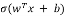. В ответе запишите получившееся число и ход решения.
0.5
Шаг 1: Вычисляем скалярное произведение wtx: 0.5*2 + (-0.25)*4 + 0.1 * 1 = 1 - 1 + 0.1 = 0.1
Шаг 2: Прибавляем смещение b: 0.1 + (-0.1) = 0
Шаг 3: Применим сигмоиду: (0) = 1/(1+e**0) = 1/2 = 0.5
95
Линейная модель y* = wx. Начальное значение w=3.0. На одной обучающей паре x = 2, y=7 используется квадратичная потеря L=1/2(y* - y)**2. Требуется сделать один шаг градиентного равным n=0.1. Найти новое значение w. В ответ запишите получившееся число и ход решения.
3.2
Шаг 1: Вычисляем предсказание y*=3*2 = 6
Шаг 2: Вычисляем градиент потери по w:
dL/dw = (y*-y)*x = (6-7) * 2 = -2
Шаг 3: Обновляем веса w_нов = w - n * dL/dw = 3-0.1 * (-2) = 3.2
96
Для ковариационной матрицы [[4,2], [2,3]] найти наибольшее собственное значение (первую компоненту в PCA). Округлите значение до двух знаков. В ответ запишите получившееся число и ход решения
5.56
- Решаем характ. Уравнение det(A - ƛI) = 0.
Det([[4 - ƛ, 2], [2, 3-ƛ]] = (4-ƛ)(3-ƛ) - 2*2 = ƛ**2 - 7ƛ + 8 = 0
- Решаем квадратное уравнение
ƛ**2 - 7ƛ + 8 = 0
D = 7**2 - 4*8=17
Sqrt(D) ~ 4.12
- Собственные значения
ƛ = (7 +- 4.12)/2. Больший корень ƛ_max = (7+4.12)/2 ~ 5.56
97
Даны правильно предсказанные положительные примеры TP=40, FP=10, FN=20, правильно предсказанные отрицательные примеры TN=130. Найти значение метрики качества модели F1-score (округлить до двух знаков). В ответ запишите получившееся число и ход решения.
0.72
- Precission = TP/(TP + FP) = 40/50 = 0.8
- Recall = TP/(TP + FN) = 40/60 = 2/3 ~ 0.66
- F1 = 2 * (precision * recall)/ (precision + recall) = 2 * (0.8 * 2/3) / (0.8 + 2/3)
Упростим: 0.8 * 2/3=1.6/3=0.53. Тогда F1 = 2 * 0.53/1.466 = 1.066 / 1.466 ~ 0.72
- В дробном виде F1 = 8/11 ~ 0.7273
98
Даны логиты [2, 1, 0]. Найти softmax-вероятность для второго класса (логит=1). Округлите до двух знаков. В ответ запшиите получившееся число и ход решения.
- Вычислим экспоненты:
e**2 ~ 7.38, e**1 ~ 2.71, e**0 = 1.
- Сумма экспонент S=11.10
- Softmax для второго класса: p2 = e**1 / S ~ 2.71 / 11.10 ~ 0.24